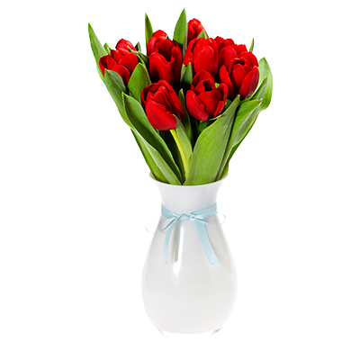

Stem Specific Guidance
Care by Flower Variety
Different botanical species have unique hydration and conditioning requirements.

Roses & Peonies
- Strip outer protective guard petals if bruised.
- Prefer deep water (fill vase 3/4 full).
- If rose heads droop, re-trim and immerse stems in warm water for 30 minutes.
Wildflowers & Daisies
- Thirsty varieties: check water level daily.
- Mist delicate petals gently with filtered water.
- Prefer shallow, fresh water changed every 48 hours.

Oriental & Asiatic Lilies
- Pluck orange pollen stamens with a tissue as buds open (prevents staining & prolongs life).
- Keep away from curious household pets.
- Unopened buds will continue to bloom sequentially.

Carnations & Orchids
- Exceptionally hardy: can easily last 14-20 days.
- Cut stems between nodes (the bumps on stem).
- Keep water strictly clear of decaying petals.